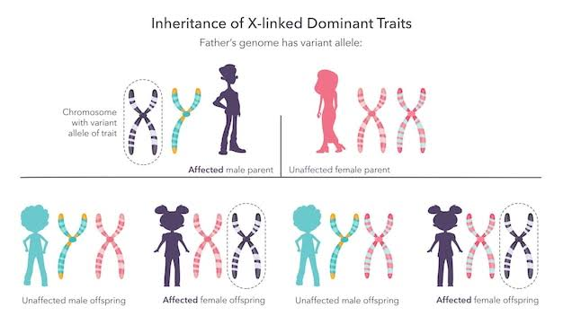

พันธุศาสตร์ประชากร
พันธุศาสตร์ประชากร คือ การศึกษาการเปลี่ยนแปลงของ ยีนและความถี่ของยีนในประชากรสิ่งมีชีวิต จากรุ่นหนึ่งไปสู่อีกรุ่นหนึ่ง โดยปัจจัยต่าง ๆ เช่น การกลายพันธุ์ การคัดเลือกโดยธรรมชาติ การย้ายถิ่น และการผสมพันธุ์ สามารถทำให้ความถี่ของยีนเปลี่ยนแปลงได้
ตัวอย่าง

อนุพันธ์สามารถนำไปใช้ในการหาความเร็ว ความเร่ง ความชัน จุดสูงสุด และจุดต่ำสุด ของฟังก์ชันได้
ดังนั้นอนุพันธ์จึงมีประโยชน์อย่างมาก ในการวิเคราะห์การเปลี่ยนแปลงของสิ่งต่าง ๆ